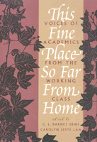

Affecting stories of faculty and graduate students from working-class on their struggles in academia
Affecting stories of faculty and graduate students from working-class on their struggles in academia


 Affecting stories of faculty and graduate students from working-class on their struggles in academia
Affecting stories of faculty and graduate students from working-class on their struggles in academia

|  |
This Fine Place So Far from HomeVoices of Academics from the Working Classedited by C. L. Barney Dews and Carolyn Leste Lawpaper EAN: 978-1-56639-291-4 (ISBN: 1-56639-291-8) |
"A collection of essays by faculty members and several graduate students, this book provides [a] glimpse of the class system in the United States and how it plays out in colleges and universities....[This] is a moving book, beautifully written."
—Contemporary Sociology
These autobiographical and analytical essays by a diverse group of professors and graduate students from working-class families reveal an academic world in which "blue-collar work is invisible." Describing conflict and frustration, the contributors expose a divisive middle-class bias in the university setting. Many talk openly about how little they understood about the hierarchy and processes of higher education, while others explore how their experiences now affect their relationships with their own students. They all have in common the anguish of choosing to hide their working-class background, to keep the language of home out of the classroom and the ideas of school away from home. These startlingly personal stories highlight the fissure between a working-class upbringing and the more privileged values of the institution.
Excerpt available at www.temple.edu/tempress
Acknowledgments
Introduction – Carolyn Leste Law
Part I: Lives Are Not Essays
1. Stupid Rich Bastards – Laurel Johnson Black
2. A Real Class Act: Searching for Identity in the "Classless" Society – Julie A. Charlip
3. Bronx Syndrome – Stephen Garger
4. The Screenwriter's Tale – Jennifer Lawler
5. You Were Raised Better Than That – Naton Leslie
6. In the Shadow of My Old Kentucky Home – George T. Martin, Jr.
7. Todos Vuelven: From Potrero Hill to UCLA – Rosa Mar�a Pegueros
8. Another Day's Journey: An African American in Higher Education – Gloria D. Warren
Part II: Border States
9. Useful Knowledge – Mary Cappello
10. A Carpenter's Daughter – Renny Christopher
11. Paper Mills – Heather J. Hicks
12. The Social Construction of a Working-Class Academic – Dwight Lang
13. Working-Class Women as Academics: Seeing in Two Directions, Awkwardly – Nancy LaPaglia
14. Ambivalent Maybe – Wilson J. Moses
15. Class Matters: Symbolic Boundaries and Cultural Exclusion – Sharon O'Dair
16. Nowhere at Home: Toward a Phenomenology of Working-Class Consciousness – Christine Overall
17. Past Voices, Present Speakers – Donna Burns Phillips
Part III: The Intellectual Worker/The Academic Workplace
18. Workin' at the U. – Milan Kovacovic
19. Class, Composition, and Reform in Departments of English: A Personal Account – Raymond A. Mazurek
20. Complicity in Class Codes: The Exclusionary Function of Education – Irvin Peckham
21. Is There a Working-Class History? – William A. Pelz
22. Psychology's Class Blindness: Investment in the Status Quo – Deborah Piper
23. Working It Out: Values, Perspectives, and Autobiography – John Sumser
Part IV: Awayward Mobility
24. The Work of Professing (A Letter to Home) – Michael Schwalbe
Afterword – C.L. Barney Dews
About the Contributors
C. L. Barney Dews is visiting Assistant Professor of American Literature in the English and Foreign Languages Department, University of West Florida.
Carolyn Leste Law is a Doctoral Candidate in English at the University of Minnesota.
They have also co-edited Out in the South (Temple).
Biography/Memoir/Autobiography
Sociology
Education
© 2015 Temple University. All Rights Reserved. This page: http://www.temple.edu/tempress/titles/1024_reg.html.